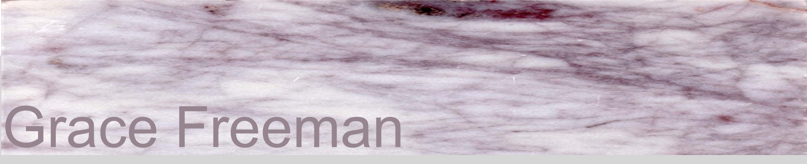

About Me


I am a recent graduate of Michigan State University who is looking forward to beginning a career in the creative world. During my time as an undergraduate I was able to study a vast variety of subject matters as I could never find myself choosing a favorite. Originally from Traverse City, MI I have grown very fond of the outdoors and hold a passion for both the environment and especially the Great Lakes. In my spare time I love to explore, create and experience new things. I am also a fine-art connoisseur who likes to not only learn about art but also make it. I am always looking to build on as many skills as I can and I carry a positive and curious attitude with me throughout both my professional and personal life.